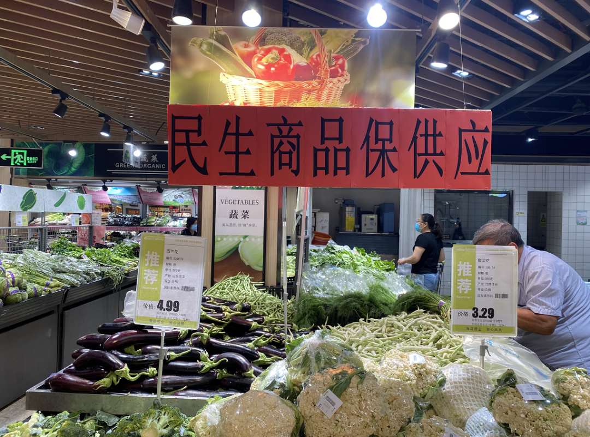

在昨晚召开的北京市疫情防控例行新闻发布会上，北京市商务局二级巡视员王洪存表示，据监测，北京目前主要的商超生活必需品供应稳定，果蔬货源充足，购物秩序良好，客流总体平稳。18家大型连锁超市以多种方式向公众发出承诺，10种与百姓生活紧密相关的蔬菜品种不涨价。
目前，北京新发地市场暂时休市进入第五天。北京的果蔬、生鲜等食品供应如何保障？ 昨天，总台央广记者实地探访了位于北京市海淀区的大型超市。
近期超市水果蔬菜采购量翻倍
由京郊、河北、河南、山东等多地供应
北京超市发连锁股份有限公司常务副总经理 赵萌： 这边全是菜，黄瓜1块5毛9，这是山东的黄瓜，圆白菜1块2毛9。

记者： 平时的价格呢？差不多？
赵萌： 是。这边是叶菜，这边都是来自于大兴的叶菜，小白菜、菠菜······
北京超市发双榆树店位于北京市海淀区的双榆树西里7号，营业面积4200平方米。昨天，记者在超市内看到，水果和蔬菜的种类比较齐全，也有不少市民在挑选购买。
北京超市发连锁股份有限公司常务副总经理赵萌说，这两天，部分市民担心蔬菜水果供应不能满足需求，超市的人流量也明显增加。实际上，平时超市的水果、蔬菜一天的采购量大约是各50吨，这几天都翻了倍。
赵萌： （平时）果儿50吨 、菜50吨，这是（平时）一天的量，做促销的时候大概上到120吨-150吨左右（一天）。昨天配了270吨的菜给店里，然后今天打算给明天配200吨，因为这两天（销售量）下来点了，老百姓他一看超市有菜，（他就没有那么着急了）。
赵萌告诉记者，从13日开始，公司配送中心连夜增加了京郊、河北、河南 等产地水果蔬菜的采收量，并且紧急加车配送，确保蔬菜供应。前一天各方联系采购，保证第二天上午10点能有新鲜的蔬菜水果上架。
赵萌： 河北这边的产地有圆茄子、尖椒、青椒和圆白菜、大白菜，这主要是河北产的。然后内蒙这边主要是西红柿，山东是黄瓜。另外还有像西葫芦、丝瓜、苦瓜、荷兰小黄瓜、长茄子、西葫芦，这都是山东的。河南这边是大蒜，河北的衡水、廊坊还有山药、菜花。另外我们的叶儿菜主要是来自于北京京郊，因为为了保证新鲜度，就是在京郊这边（进货），大兴、房山这些的叶菜早上去收割，然后白天就可以到库。
小众蔬菜和水果未大批量采购
肉制品供应充足稳定
赵萌说，目前超市内常见的水果和蔬菜供应充足，但一些相对小众的蔬菜和水果，因为销售量并不大，考虑到运输成本以及需求的迫切性等问题，超市近期并没有直接从产地大批量采购。
赵萌： 产地（直接运输过来）是什么概念，产品得大车一整车过来，所以只能是单一品种大产量。所以现在你看我的门店，可能原来菜比如说八九十个品种，现在大概能保60个品种，全是产地来的。然后有一些特别小众的品种，产地来不了货，我也不可能为了那点货专门去车，（成本太高）。
除了水果和蔬菜，肉制品、水产品等供应也比较充足。
赵萌： 肉类我们倒比较放心，因为我们肉类的渠道全都是品牌的，比较稳定。像猪肉，我们是跟北京市定点屠宰渠道五肉联还有鹏程合作，而且我们合作几十年了。牛肉、羊肉我们做的是品牌的，他们都有自己固定的屠宰渠道，质量比较放心。另外还有一个叫祁连牧歌，这个品牌是从甘肃那边的羊肉直接运过来的，还有像科尔沁的牛肉，都是内蒙的厂家直接运过来的。
隔离观察增加超市采购成本
正努力与供货商协调
这两天，全国多个地区针对北京旅客到访提出了防控要求，不少城市要求北京市中高风险地区居民抵达后进行隔离医学观察。
赵萌说，对他们直接的影响是各地负责运输的司机把蔬菜水果运到北京后，回到当地面临着需要隔离14天的问题，北京的司机目前也无法直接去当地拉货，这无形中提高了很多超市的采购成本。
赵萌： 肉相对会好一些，肉会稳定，就是这个菜，因为它是靠大车运进来，它不像肉，肉的销量没那么大，还好，而且北京本身也有屠宰场。菜（的运输）这个事我们也在关注这个情况，从我们的角度，现在只能尽最大努力跟产地协调，你得让人过来，只能说随机应变 ，走一步看一步，遇到困难解决困难，遇到问题解决问题。
测温、限流、消杀…… 超市全面开展防疫 工作
超市近期人流量明显增多，防疫工作也同样不容忽视。
赵萌： 看见摄像头没有？你可能没感觉，你进来的时候，实际上那边的设备已经在测你的温度了，因为没有发生报警，（所以就让你进去了）……
除了测体温等常规防疫措施，目前超市里每两个小时就要进行一次消杀，此外在高峰时段还会限流。
赵萌： 限流分几个部分，一个卖场内的区域，如果卖场有客流集中的区域，值班经理、员工就要现场疏导，让顾客分散，现在顾客还挺配合。另外，每两个小时消杀一次，车、框，整个店里头全面喷。我们有自动喷消毒水的机器，过去打农药的那个，我们给店里都配了。
来源：中央广电总台中国之声（ID：zgzs001）
总台央广记者：钱成 唐国荣